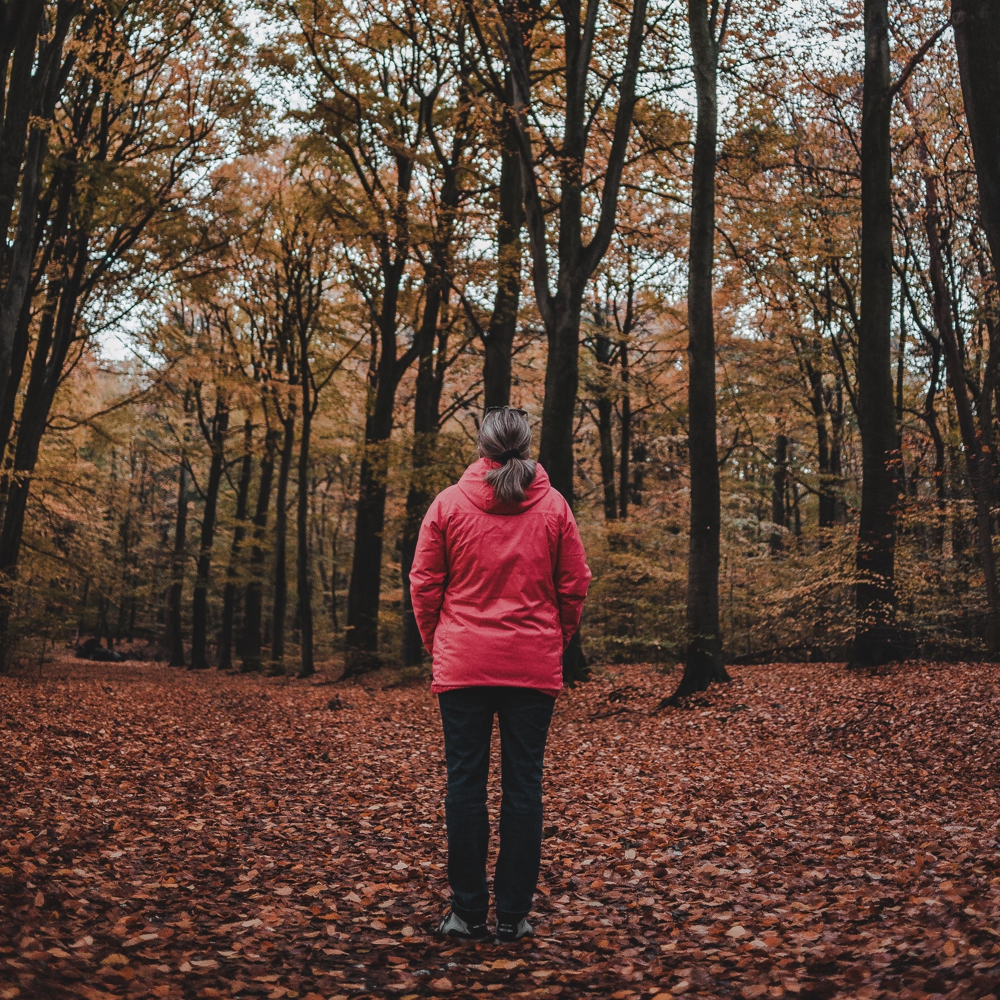

WereldVreemd
Group for adults on the spectrum
‘WereldVreemd’ is a Dutch word used to explain how some people can experience themselves as foreign (vreemd) to the world (wereld) and vice versa.

{{% md %}}
The aim of this psychoeducational group was to provide mutual understanding as well as skills training in a supportive environment.
It is clear that from an early beginning with only men the group has almost reached a one-on-one attendance.
This may be so because women on the spectrum are more easily diagnosed.
However we have still a long way to go when we realise that women on the spectrum with comparative ASD symptoms to men on the spectrum generally are sooner diagnosed if they also have a lower IQ or more significant behaviour problems.
Other research has shown recently that the women on the spectrum generally show a level of social skills typical of man not on the spectrum.
It is well established that there are several potential benefits of receiving an ASD diagnosis including increased self-understanding and a more realistic and therefore more purposeful self-perception: as one of the people in the group once phrased a noun coming it: “ASD explains ‘me’ to me best”.
There is an element of this group that often surprises people on the outside.
That is putting several people on the spectrum together is increasing communication difficulties a few times over.
This has turned out not to be so. Participants feel much freer to express themselves in their natural way.
The element of comparing notes is highly regarded.
It makes sense that people on the spectrum would want to learn from others on the spectrum who have successfully manoeuvred through difficult social situations.
I am very pleased to see that this group is providing an answer for men and women on the spectrum and I will continue to provide this service to the neurodiverse community under COVIDSafe conditions.
## How the group works
**Partners, family or support people do not attend. An assessment interview is required before invitation.**
The group has been operating for 12 years, and offers psycho-education and skills training for adults on the spectrum.
To ensure we comply with COVIDSafe protocols, the WereldVreemd Group has moved online.
Held via Zoom Pro one Saturday per month.
The group has on average 10 participants per session.
It is interesting to note the rise of women attending the WereldVreemd group.
In the first 2.5 years, one woman attended once and in the last year almost half of participants are women!
{{% /md %}}